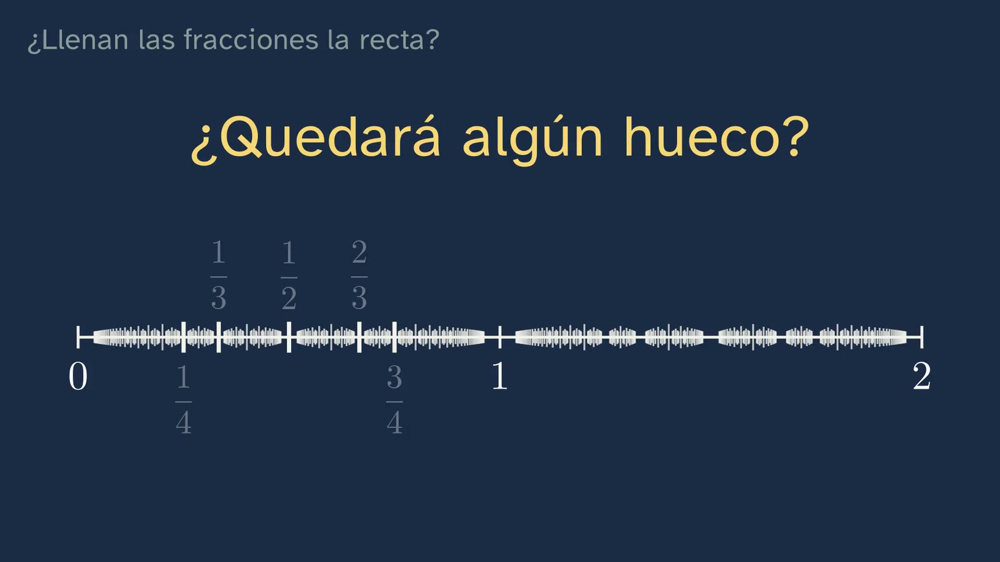
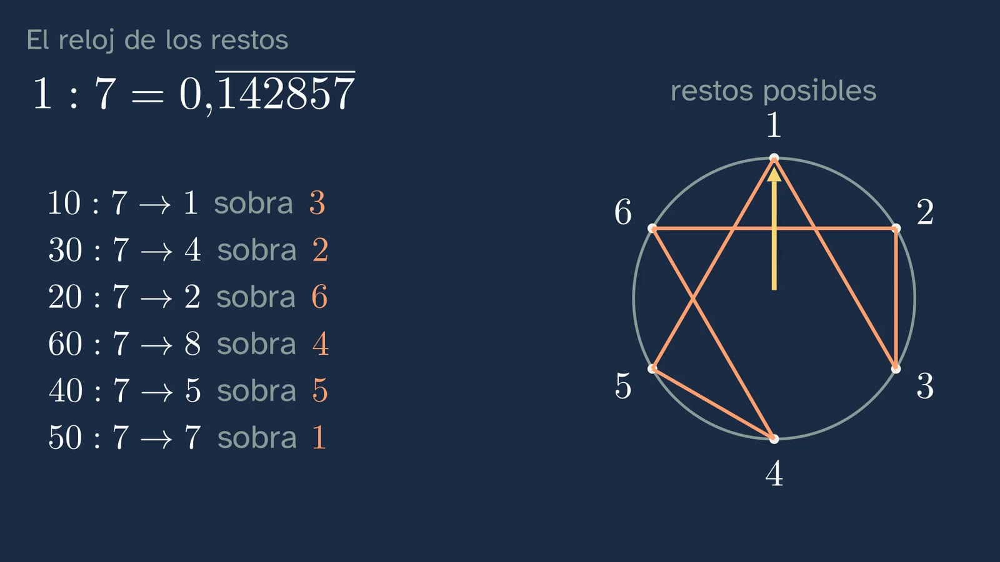
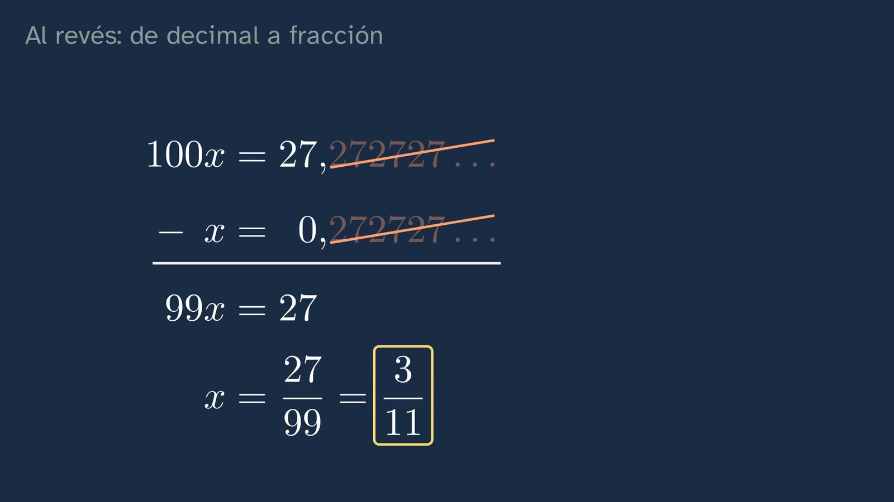
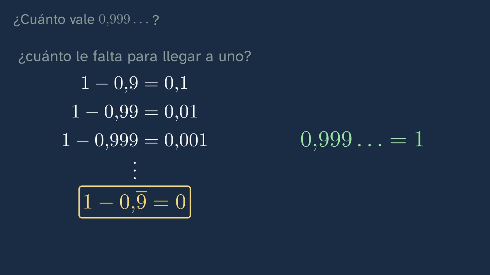
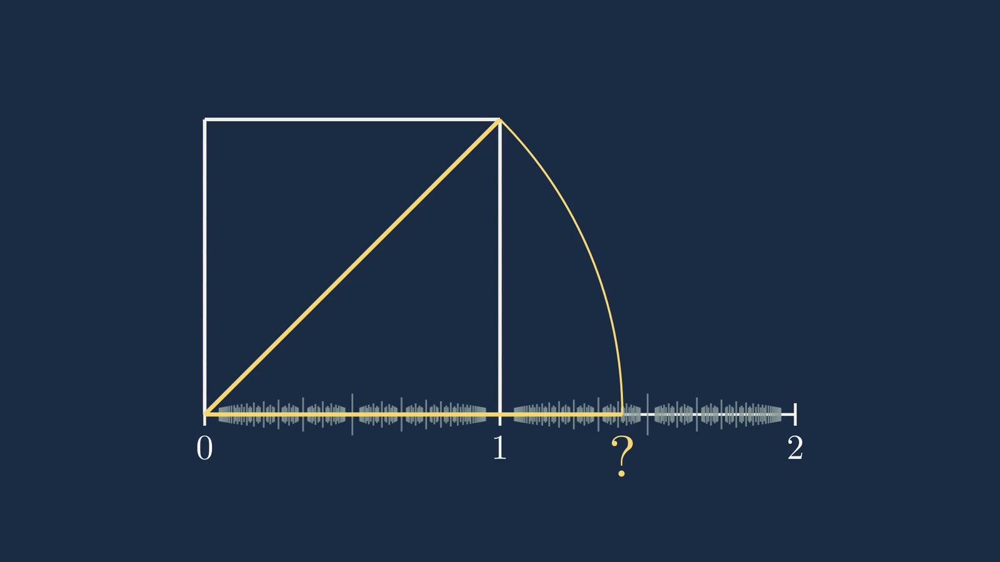

¿Llenan las fracciones la recta?
En pocas palabras
La clase parte de una pregunta que parece fácil: si marcamos en la recta todas las fracciones, ¿queda algún hueco? No la contesta (es la apuesta que abre la clase 2), pero prepara el terreno: las fracciones son densas, sus decimales siempre se acaban o se repiten y, al revés, todo decimal periódico es una fracción. El corazón de la clase es el reloj de los restos, que convierte una división a mano en una demostración que se ve.
Objetivo. Al terminar, el alumnado sabrá reconocer por sus decimales si un número es una fracción, pasar de una forma a otra y explicar por qué entre dos fracciones siempre cabe otra.
Currículo
Real Decreto 243/2022, Matemáticas I.
| Elemento | Qué dice el decreto | Dónde se trabaja |
|---|---|---|
| Saber básico A.1 | «Estrategias para operar con números reales y vectores: cálculo mental o escrito en los casos sencillos y con herramientas tecnológicas en los casos más complicados.» | Pasar de fracción a decimal y de decimal a fracción |
| Saber básico F.1 | «Tratamiento del error, individual y colectivo como elemento movilizador de saberes previos adquiridos y generador de oportunidades de aprendizaje en el aula de matemáticas.» | ¿Cuánto vale 0,999…?: el error típico, desmontado |
| Competencia específica 2 | «Verificar la validez de las posibles soluciones de un problema empleando el razonamiento y la argumentación para contrastar su idoneidad.» | Comprobar 27/99 = 3/11 dividiendo |
| Competencia específica 3 | «Formular o investigar conjeturas o problemas, utilizando el razonamiento, la argumentación, la creatividad y el uso de herramientas tecnológicas, para generar nuevo conocimiento matemático.» | La apuesta del principio y el reloj de los restos |
| Competencia específica 5 | «Establecer, investigar y utilizar conexiones entre las diferentes ideas matemáticas estableciendo vínculos entre conceptos, procedimientos, argumentos y modelos para dar significado y estructurar el aprendizaje matemático.» | La división, la recta y la fracción, como tres caras de lo mismo |
| Competencia específica 9 | «Utilizar destrezas personales y sociales, identificando y gestionando las propias emociones, respetando las de los demás y organizando activamente el trabajo en equipos heterogéneos, aprendiendo del error como parte del proceso de aprendizaje y afrontando situaciones de incertidumbre, para perseverar en la consecución de objetivos en el aprendizaje de las matemáticas.» | La intuición sobre 0,999…, reconocida antes de corregirla |
| Criterio 2.1 | «Comprobar la validez matemática de las posibles soluciones de un problema, utilizando el razonamiento y la argumentación.» | Las comprobaciones de la clase |
| Criterio 3.1 | «Adquirir nuevo conocimiento matemático a partir de la formulación de conjeturas y problemas de forma guiada.» | La actividad del reloj de los restos |
| Criterio 5.1 | «Manifestar una visión matemática integrada, investigando y conectando las diferentes ideas matemáticas.» | Decimales, fracciones y recta |
| Criterio 9.1 | «Afrontar las situaciones de incertidumbre identificando y gestionando emociones y aceptando y aprendiendo del error como parte del proceso de aprendizaje de las matemáticas.» | El reto de 0,999… |
Lo que hay que traer de la ESO: fracciones y decimales, y la división con decimales.
Cómo está construida la clase
Capítulos del vídeo
Once minutos, en ocho capítulos. La clase sigue las bases formativas del canal: cada idea se predice antes de verse, se demuestra (no se afirma) y se practica.
| Capítulo | Qué pasa | Por qué así |
|---|---|---|
| Qué vamos a ver | Ximena presenta el tema y el mapa de sus seis clases, con la de hoy resaltada. | Saber dónde se está y adónde se va ayuda a ordenar lo que se aprende. |
| La pregunta | Ximena plantea el enigma y el alumnado apuesta sí o no, con una pausa. | Predecir antes de ver compromete con una respuesta y hace que la explicación importe. |
| Lo que ya sabes | 3/4 = 0,75 y 1/3 = 0,333…, con pausa para contestar antes de verlo. | Recuperar lo sabido fija más que volver a oírlo. |
| Siempre cabe otra | Zoom sobre la recta; el punto medio de 1/3 y 1/2 es 5/12; y por qué funciona siempre. | Primero la intuición (el zoom), después lo exacto (el argumento general). |
| El reloj de los restos | División de 1 entre 7 paso a paso; los restos dan la vuelta a un reloj de seis horas. | La demostración se ve: sólo hay seis restos posibles, así que el ciclo es inevitable. |
| Al revés: de decimal a fracción | 0,2727… = 27/99 = 3/11, comprobado dividiendo; la regla general y el caso 1/6. | El «truco» se justifica y se generaliza, no se memoriza. |
| ¿Cuánto vale 0,999…? | El reto, y tres caminos distintos que llevan a 1. | El error típico se plantea con respeto y se desmonta razonando. |
| Para practicar y seguir pensando | Tres ejercicios, una pregunta abierta y la diagonal del cuadrado como enlace a la clase 2. | Práctica espaciada: las soluciones llegan al empezar la clase siguiente. |

Plan de una sesión de 50 minutos
| Minutos | Qué se hace |
|---|---|
| 0–5 | Sin vídeo: la apuesta. ¿Quedan huecos en la recta si marcamos todas las fracciones? Cada cual apunta sí o no, y por qué. |
| 5–15 | Vídeo de 0:00 a 3:20 (hasta «El reloj de los restos»). Parar en cada «para y piensa» y dejar contestar antes de seguir. |
| 15–25 | Vídeo de 3:20 a 5:33 (el reloj de los restos). Antes de seguir, en parejas: ¿cómo pasaríais 0,2727… a fracción? Después, vídeo de 5:33 a 8:11. |
| 25–45 | La actividad del reloj de los restos, con la conjetura puesta a prueba con 1/21. |
| 45–50 | Vídeo de 8:11 al final: ¿cuánto vale 0,999…? Pregunta abierta para casa y la hoja con los tres ejercicios. |
Errores típicos y cómo se tratan
- «0,999… es un poquito menos que 1». Es el más resistente. La clase lo desmonta de tres maneras: con el truco de restar colas, con 1/3 · 3, y preguntando cuánto le falta para llegar a 1 (menos que cualquier cantidad: cero). Conviene reconocer que la intuición es natural antes de corregirla.
- «Si tiene infinitas cifras, no es una fracción». 1/3 las tiene. La clase separa infinitas cifras de cifras que se repiten.
- «0,999… y 1 son números distintos porque se escriben distinto». Es el germen de la pregunta abierta: un mismo número puede tener dos escrituras decimales.
- Multiplicar siempre por 10 para pasar a fracción. Se multiplica por 10, 100 o 1000 según las cifras del periodo; si el periodo empieza más tarde (1/6 = 0,1666…), se combinan dos multiplicaciones.

Preguntas y soluciones
Para y piensa (dentro del vídeo)
- ¿Cuánto es 3/4? ¿Y 1/3? 0,75 (se acaba) y 0,333… (se repite).
- Sobra 1, igual que al principio: ¿qué pasará ahora? Todo se repite: 1/7 = 0,142857 142857…
- Divide 3 entre 11. Restos 3, 8, 3: vuelve el 3, así que 3/11 = 0,2727…
- ¿Cuánto vale 0,999…? Exactamente 1.
Para practicar (las soluciones abren la clase 2)
- 0,4545… como fracción. Periodo de dos cifras: 100x − x = 45, así que 99x = 45 y x = 45/99 = 5/11.
- ¿1/8 y 1/12 se acaban o se repiten? ¿Por qué? 1/8 = 0,125 se acaba: al dividir, un resto llega a cero (restos 1, 2, 4, 0). 1/12 = 0,08333… se repite. La razón de fondo: una fracción simplificada tiene decimales que se acaban si y sólo si su denominador no tiene más factores primos que 2 y 5 (8 = 2³; 12 = 2² · 3).
- Tres fracciones entre 1/3 y 1/2. Por ejemplo, 5/12 (el punto medio), 3/8 y 11/24 (los puntos medios de los dos trozos); o 2/5, 3/7 y 4/9.

Para seguir pensando. Si 0,999… y 1 son el mismo número, un número no puede ser lo que escribimos. Entonces, ¿qué es un número? No tiene respuesta de libro. Da para distinguir el número de sus representaciones (numeral, fracción, decimal, punto de la recta) y para asomarse a una pregunta filosófica clásica: ¿los números se descubren o se inventan? En el vídeo queda abierta a propósito.

Una actividad para el aula
El reloj de los restos, en papel (20–25 minutos, en parejas).
- Cada pareja recibe un denominador: 3, 7, 11, 13 o 17. Divide 1 entre él a mano, apuntando los restos, hasta que uno se repita, y dibuja su reloj (tantas horas como el denominador menos uno).
- Se ponen en común las longitudes del periodo: 1/3 → 1; 1/7 → 6; 1/11 → 2; 1/13 → 6; 1/17 → 16.
- Conjetura (CE3): ¿qué relación hay entre el denominador y la longitud del periodo? Con estos datos aparece que el periodo nunca pasa del denominador menos uno y que siempre lo divide (12 = 6 · 2; 10 = 2 · 5).
- Comprobación (CE2): ¿qué pasa con 2/7? (Recorre el mismo reloj que 1/7, empezando en el 2.) ¿Y con 1/8 o 1/40? (El reloj se para: algún resto llega a cero.)
- La conjetura, puesta a prueba (CE2 y CE3): ¿y 1/21? Su periodo es 6, y 20 no es múltiplo de 6: la conjetura falla. No se tira, se afina: ¿qué tenían en común 3, 7, 11, 13 y 17 que no tiene 21? (Son primos.) Una conjetura que sobrevive a un intento serio de tumbarla vale más; una que cae enseña a precisarla.
Para el profesorado: que el periodo de 1/p divida a p − 1 cuando p es primo (distinto de 2 y de 5) es una consecuencia del pequeño teorema de Fermat. No hace falta demostrarlo en 1.º: basta con que la clase lo conjeture con datos, lo ponga a prueba con 1/21 y lo afine. Si alguien pregunta por 1/27 (periodo 3, que tampoco divide a 26), confirma lo mismo: la regla es de los primos.

Fuentes
- Real Decreto 243/2022, de 5 de abril, por el que se establecen la ordenación y las enseñanzas mínimas del Bachillerato (BOE): https://www.boe.es/buscar/act.php?id=BOE-A-2022-5521.
- Todo lo demás se demuestra en la propia clase. Los cálculos de esta ficha están comprobados ejecutándolos.
Sobre esta clase
GinCol Lab es un canal gratuito de ciencia para curiosos. Ximena es un personaje ilustrado con voz sintética, creada por ordenador, que no imita a ninguna persona conocida; el guion y esta ficha los escribe una IA (Claude, de Anthropic) y los revisa una persona antes de publicarse. Si ves un error, dínoslo: aprender también es corregir.
Esta ficha se publica con licencia Creative Commons Reconocimiento 4.0: puedes copiarla, adaptarla y usarla en tu aula citando a GinCol Lab.
Cómo citar esta ficha
GinCol Lab (2026). ¿Llenan las fracciones la recta? Ficha docente de GinCol Lab: Matemáticas I · 1.º de Bachillerato · Los números reales · Clase 1 de 6. https://gincollab.github.io/aula/matematicas-i/t01-c1/. CC BY 4.0.
Ficha docente de GinCol Lab · CC BY 4.0 · Código fuente y erratas